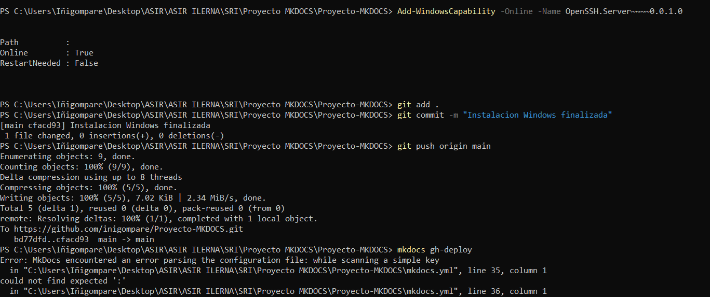

故障排除：错误与解决方案
这是文档中最重要的部分。这里我记录了在项目开发过程中遇到的 真实错误 以及我是如何解决它们的。从错误中学习是系统管理的基础。

🔴 问题 1：PowerShell 权限
错误描述
当尝试使用 pip 安装包或运行某些管理命令时，PowerShell 显示以下错误：
错误：请求的操作需要提升权限
ERROR: Could not install packages due to an OSError: [WinError 5]
Access denied: 'C:\Program Files\Python312\Lib\site-packages\...'
Consider using the `--user` option or check the permissions.
或者更直接的消息：
问题分析
此错误发生是因为 Windows 保护系统文件夹（如 C:\Program Files\），并需要 管理员权限 才能修改它们。当全局安装 Python 包时，pip 尝试写入这些受保护的文件夹。
解决方案
解决方案：以管理员身份运行 PowerShell
选项 A：以提升的权限打开终端
1. 在开始菜单中搜索 "PowerShell"
2. 右键单击 → **Run as administrator**（以管理员身份运行）
3. 确认 UAC（用户账户控制）对话框
4. 运行之前失败的命令

VS Code 提示
如果你使用 VS Code，你可以配置集成终端默认以管理员权限打开 PowerShell。但是，出于安全考虑，不建议这样做。当你需要提升权限时，最好打开一个外部终端。
🔴 问题 2：YAML 语法错误
错误描述
运行 mkdocs serve 时，系统显示配置文件解析错误：
错误：YAML 语法错误
ERROR - Config file 'mkdocs.yml' could not be loaded:
while parsing a block mapping
expected <block end>, but found '<scalar>'
in "mkdocs.yml", line 35, column 1
could not find expected ':'
问题分析
检查 mkdocs.yml 文件后，我发现我犯了一个严重的错误：我在同一个文件中混合了 SSH 命令和 YAML 配置。而且，缩进也不一致。
损坏的文件看起来像这样：
site_name: My Project
theme:
name: material
# Generate SSH key (这不应该在这里)
ssh-keygen -t rsa -b 4096
nav:
- Home: index.md
- Page 2: page2.md # 错误的缩进
解决方案
解决方案：清理并正确格式化
YAML 文件必须 仅包含配置，不包含命令。此外，缩进必须一致。
```yaml title="✅ mkdocs.yml (正确)"
site_name: My Project
theme:
name: material
palette:
primary: indigo
nav:
- 首页: index.md
- 页面 2: page2.md
```
YAML 黄金法则
| 规则 | 正确示例 | 错误示例 |
|---|---|---|
| 使用空格，不要用制表符 | name: value |
→ name: value |
| 2 空格缩进 | theme:name: material |
theme:name: material |
| 带短横线和空格的列表 | - item |
-item |
| 带引号的包含特殊字符的字符串 | title: "Hello: World" |
title: Hello: World |
如何检测不可见的制表符
在 VS Code 中，你可以可视化不可见字符：
- 打开命令面板 (
Ctrl + Shift + P) - 搜索 "Toggle Render Whitespace"（切换渲染空白字符）
- 空格将显示为点 (·)，制表符显示为箭头 (→)
你也可以配置 VS Code 以在 YAML 文件中自动将制表符转换为空格。
🔴 问题 3：GitHub Pages 部署不完整
错误描述
运行 mkdocs gh-deploy 后，GitHub Pages 页面显示 404 error 或没有更新最新的更改。
错误：页面未找到 (404)
访问 https://your-user.github.io/Project-MKDOCS/ 时出现：
> **404 - There isn't a GitHub Pages site here.**
可能的原因和解决方案
GitHub Pages 可能配置为从错误的分支提供服务。
验证：
解决方案：
- 前往 GitHub 上的仓库
- Settings（设置）→ Pages
- 确保 Source（来源）设置为
gh-pages和/root

有时浏览器会缓存 404 页面。
解决方案：
- 强制刷新：
Ctrl + Shift + R - 或者在隐身窗口中打开
- 等待 2-3 分钟（GitHub Pages 可能需要时间传播）
正确的部署命令
# 确保你在 main 分支并已提交更改
git add .
git commit -m "Update documentation"
git push origin main
# 部署到 GitHub Pages
mkdocs gh-deploy
部署成功
INFO - Cleaning site directory
INFO - Building documentation to directory: site
INFO - Documentation built in 0.82 seconds
INFO - Copying 'site' to 'gh-pages' branch and pushing to GitHub.
INFO - Your documentation should shortly be available at:
https://your-user.github.io/Project-MKDOCS/
🟡 问题 4：内容为空或不完整
问题描述
最初，.md 文件几乎是空的，或者只包含没有格式的纯文本。结果是一个功能正常但视觉效果很差的网站。
分析
问题在于缺乏对 Material for MkDocs 功能的了解。我没有利用：
- Admonitions (彩色提示框)
- 带语法高亮的代码块
- 选项卡
- 可折叠块
- 表格
- 表情符号和图标
解决方案
学习扩展 Markdown 语法
Material for MkDocs 为 Markdown 扩展了许多额外功能。关键是：
1. **阅读官方文档**：[squidfunk.github.io/mkdocs-material](https://squidfunk.github.io/mkdocs-material/)
2. **在 `mkdocs.yml` 中启用扩展**
3. **练习** 每种类型的元素
语法备忘单
提示框：
带标题的代码：
```选项卡：
可折叠：
✅ 经验教训
最终思考
每一个错误都是学习的机会。最令人沮丧的问题教会了最有价值的教训：
- **权限**：在运行命令之前，始终验证你是否拥有必要的权限
- **语法**：YAML 对格式要求很高；使用验证器或带高亮的编辑器
- **部署**：阅读完整的日志，而不仅仅是错误消息
- **文档**：花时间学习你使用的工具